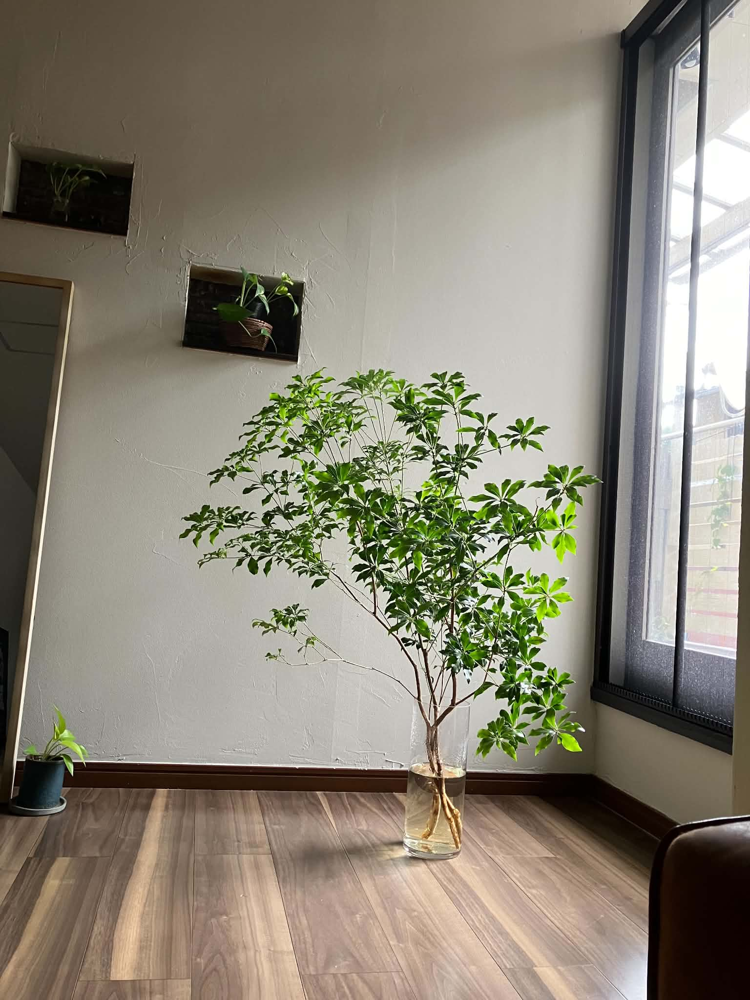
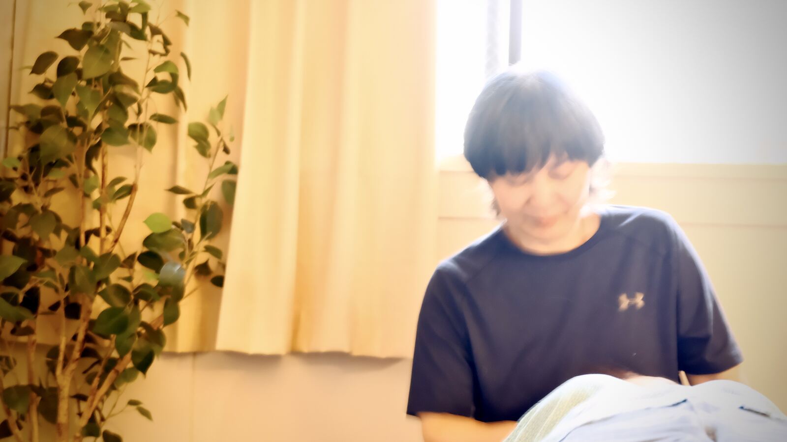
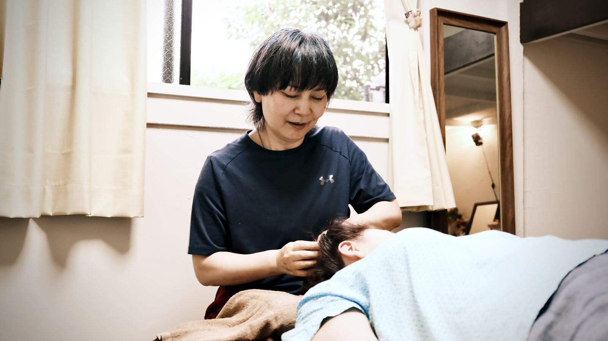
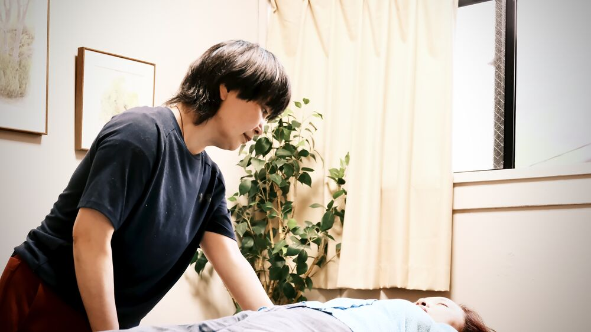
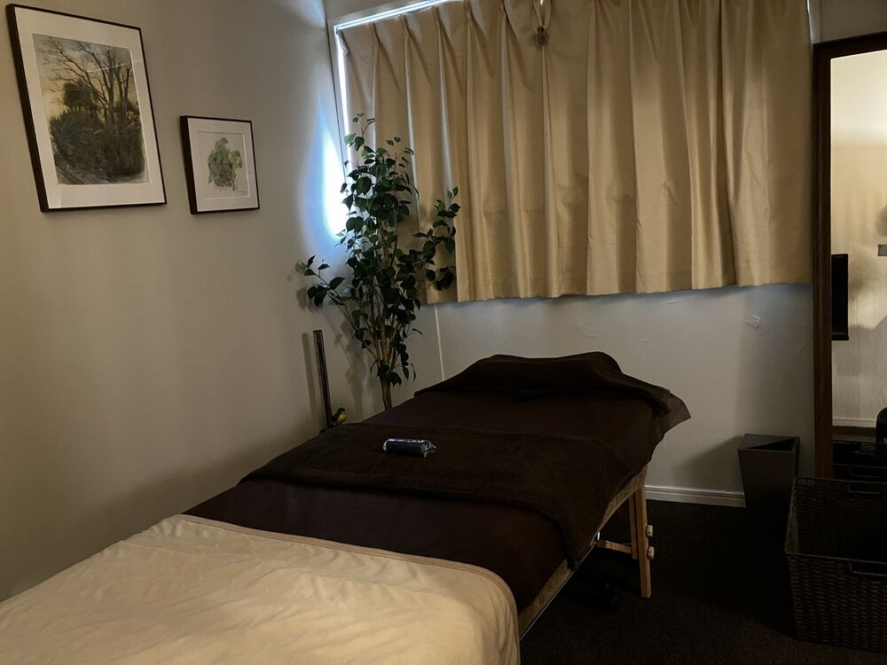
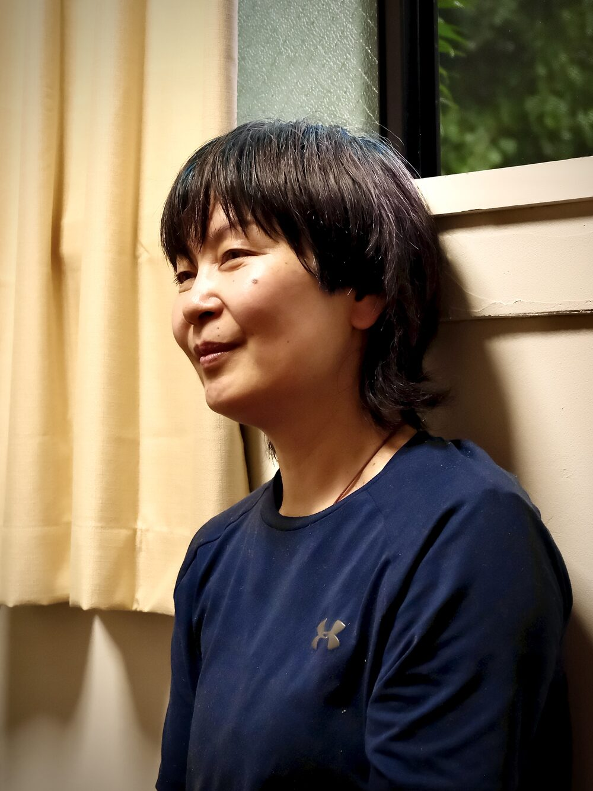
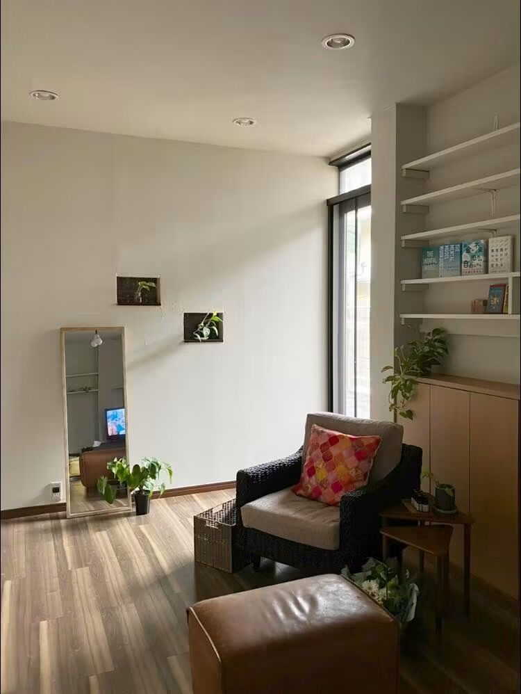

「自分の身体のことは、身体に聴けばわかる」
j body careが大切にしているのは、この感覚です。
身体を無理に変えようとしたり、コントロールしたりするのではなく、
また、身体に振り回されるのでもなく、
今ここにある身体とつながっていくこと。
身体はいつも、その時の最善を生きています。
だからこそ、体調に浮き沈みがあるのも自然なこと。

不調や痛みも、ただ取り除く対象としてではなく、
身体からの大切なメッセージとして丁寧に感じていくことを大切にしています。
触れること、感じることを通して、
エネルギー、水分、血液が巡り、
本来備わっている循環や力が思い出されていく。
そして、既に自分の中に在るものに気づいていく。
j body careでの時間は、
その体験を分かち合い、響き合うための時間です。
それは、
“あるがままに、いのちを生きる”
私の祈りでもあります。

かたく強ばった筋肉を、施術でゆるめる。
身体の滞りを見つけ、流れを促す。
身体からのメッセージを受け取る。

定期的に身体と向き合いながら、身体をゆるめ、巡りを促していくボディワーク。

身体に触れることと、対話すること。
よもぎ蒸し・オイルトリートメント・対話を通して、今、身体にあるものを丁寧に感じ、受け取っていくセッションです。
Zoomでの対話を通して、ご自身の身体を感じるところから始めます。
身体からの声を共に受け取りながら、内側にあるものに気づいていくセッションです。
「入り口は違っても、向かう先は自分自身」
対面ボディワークを受けて
「自分には、本当は感じたかったことがあったんだ」
受ける前は、日常がとにかく忙しく、やらなければいけないことに追われている感覚がありました。
慢性的に疲れが溜まっていて、自分の身体に意識を向ける余裕もあまりありませんでした。
施術を受けながら、話を聞いてもらったり、身体の声にも耳を傾けてもらったりしました。
その中で気づいたのは、「自分には本当は感じたかったことがあったんだ」ということです。
その感覚をただ自分に感じさせてあげることで、内側にあった固いものが少しずつ溶けていくような感じがありました。
それと同時に、体全体が安心感に満ちていき、心が軽くなるような不思議な感覚がありました。
私は足に慢性的な痛みがあるのですが、ある時じゅれいさんに、「足も身体の一部で、全部つながっていることを思い出してね」と言われたことが印象に残っています。
それまで私は、頭の中の忙しさに気を取られて、自分の大切な身体の一部である足に意識を向ける余裕がありませんでした。
でも、その言葉をきっかけに、自分の足のことをちゃんと感じてあげる大切さに気づきました。
今でも時々、じゅれいさんに「足のことを思い出してくださいね」と言われます。
そうやって足に意識を向けるだけで、頭の忙しさから少し離れ、身体を休める時間を取れるようになりました。
日々やることに追われて、自分の身体の声を後回しにしてしまっている人におすすめしたいです。
慢性的な疲れや痛みがある人、頭では頑張っているけれど、心や身体が置いてきぼりになっているように感じる人にも合っていると思います。
自分の身体にやさしく意識を向けたい人や、安心して自分の内側を感じる時間を持ちたい人に、ぜひ受けてみてほしいです。
モニター終了者のアンケート回答が届き次第、追加予定です。

上間 寿玲（じょうま じゅれい）
ボディワーカー／j body care主宰
40歳になった頃、兄をがんで亡くしました。
その当時、私自身もとても体調が悪く、あらゆる不定愁訴を体験していました。
鬱で半年以上仕事を休み、自宅療養していたこともあります。
兄が亡くなったことで死生観が大きく変わり、「健康ってなんだ？」「生きるってどういうこと？」という問いに憑りつかれるようになりました。
さまざまなことを学び、体験していく中で、それを職業とするようになります。
肩こり専門店で経験を積み、2018年、京都・烏丸で独立。
2025年、京都市左京区へ自宅兼サロンを移転しました。
多くの方の身体に触れる中で、身体には、その方の多くの記憶が宿っていることを感じました。
その方が気づいている・いないに関わらず、身体は日常の中で多くのことを感じ、気づき、それが感じられるまで大切に抱えている。
私は、その声を受け取り始めました。
時には、ご本人が言っていることとは真逆のメッセージを身体から受け取ることもありました。
身体から伝わってくる悲痛な声に、涙を堪えられない体験もあります。
そして私は、身体から受け取ったその声を、その身体の持ち主に伝えずにはいられませんでした。
身体と心はつながっている。このことは、多くの方が体験を通して知っていることです。
だからこそ身体に不具合があると、それをどうにかしようと考える。身体をコントロールする対象としてしまう。
でも、その痛みは、その不具合は、もしかしたら身体からのメッセージかもしれない。
ただ見つめる。耳を傾ける。触れる。
そうすることで、感じ、受け取れるものがあるかもしれない。
そんな体験を共にできたら。それが私の歓びであり、祈りです。
はい。
ボディワークにしても、リモートセッションにしても、身体と心のとてもパーソナルな部分に深く触れることのある時間です。
だからこそ、一つひとつ丁寧に、大切に触れながら、安心してその時間を過ごしていただけるよう努めています。
無理に何かを話したり、感じたりする必要もありません。私はいつでも伴走者として、共に居ます。
メニューをご覧になり、負担に感じない範囲で、ピンときたものをお選びください。
入り口はどれでも、必ずあなたにつながります。
もちろんお受けいただけます。
リモートボディワークセッションは男女共通料金です。対面ボディワークのみ男性料金を設定しています。詳しくはメニュー・料金をご覧ください。
決まったプログラムに沿って進めるセッションではありません。
まずは「今考えていること」「不快に感じていること」「身体の不調」など、その時の状態をお話しいただくところから始めます。
そこから対話をしながら、身体を感じていただいたり、身体へのアプローチをお伝えしたり、実際に立ったり歩いたりしていただくこともあります。
身体の使い方や、その時に感じ取ったことをフィードバックしながら対話を重ねていくと、少しずつ言葉が出てきたり、ご自身の中で気づきが起こったりすることがあります。
実際に「身体が緩んだ」「力を抜くことができた」と感じられる方もいらっしゃいます。
その時、その人の身体にあるものを一緒に感じ、受け取っていく。そんな時間です。
ご予約はGoogleフォームより承っております。
下記ボタンよりお進みください。
京都市左京区
最寄り駅・バス停「二軒茶屋」
詳しい住所は、ご予約確定後にお知らせします。
